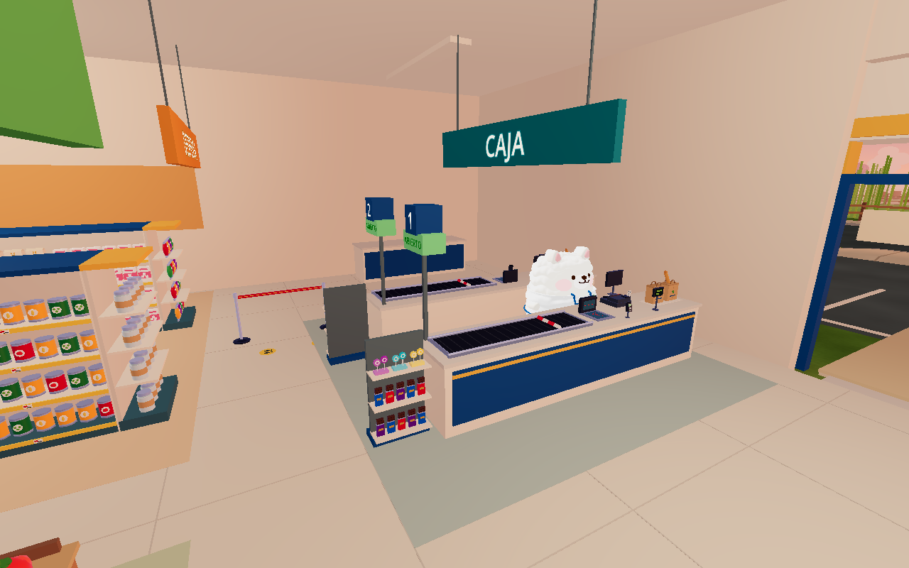
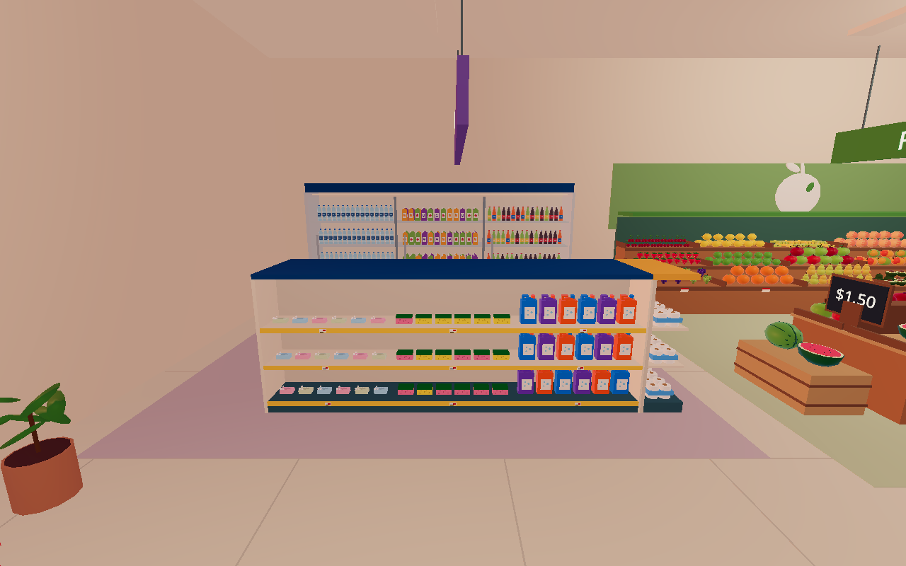
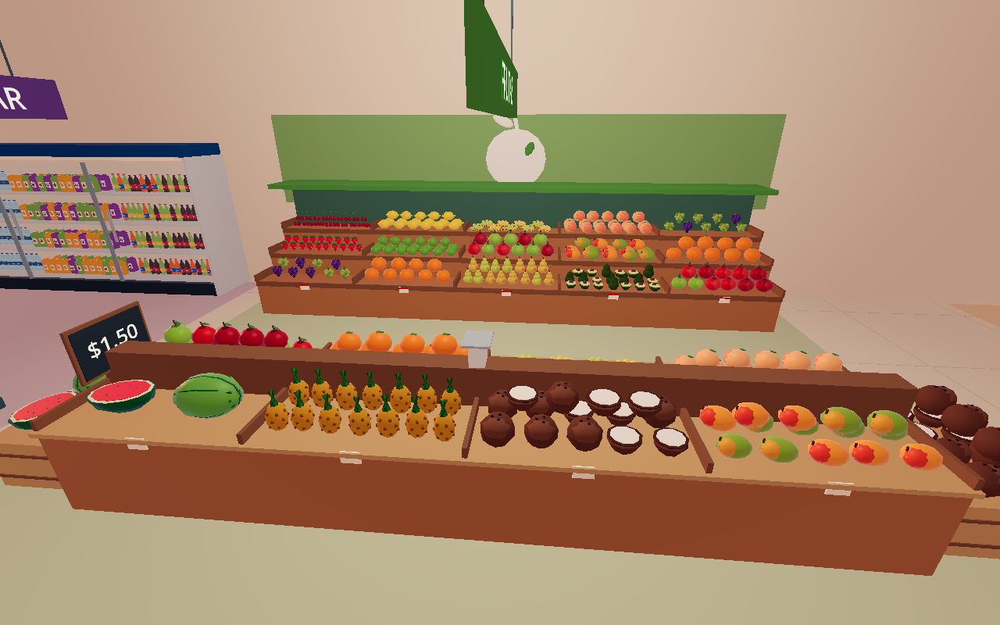
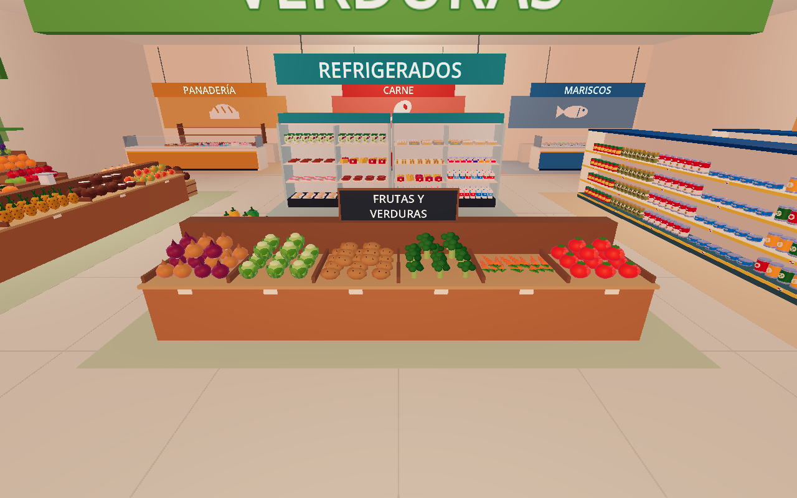
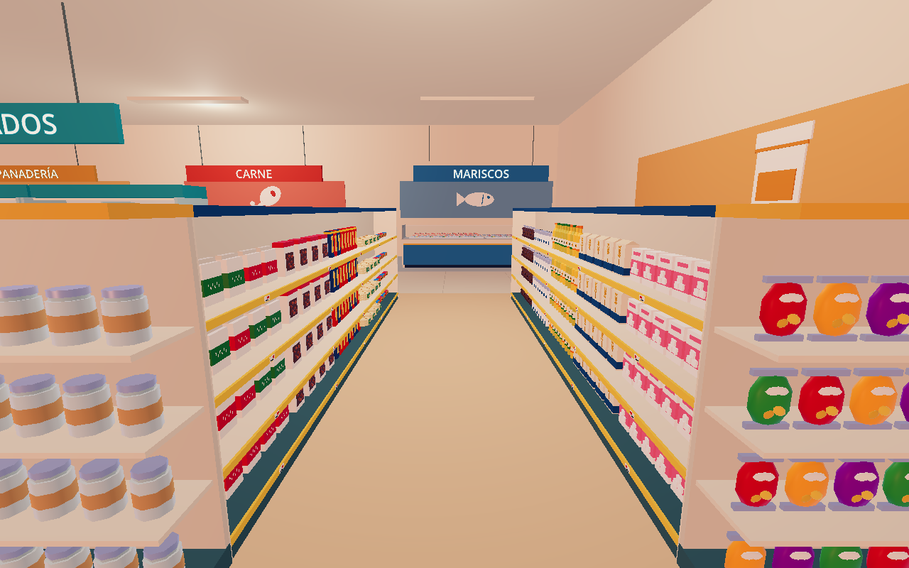
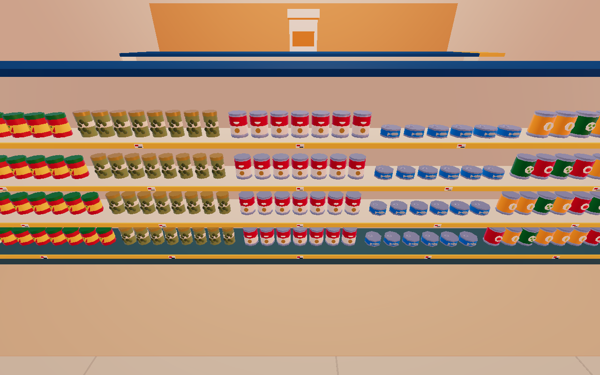
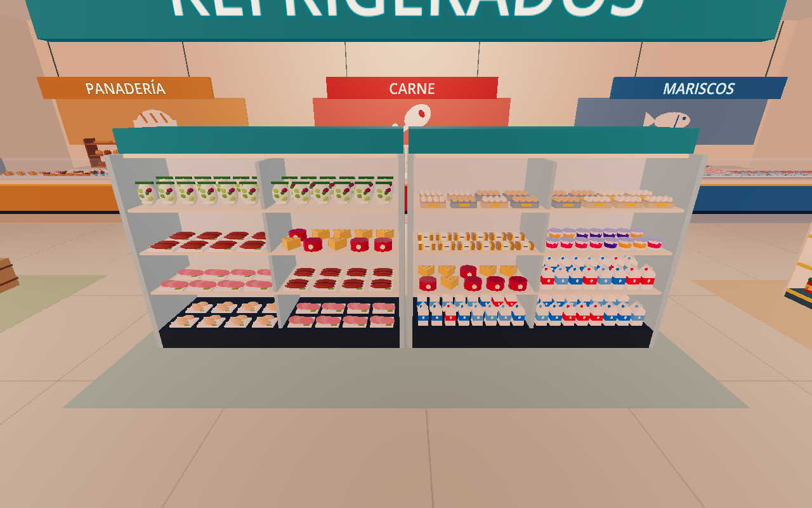
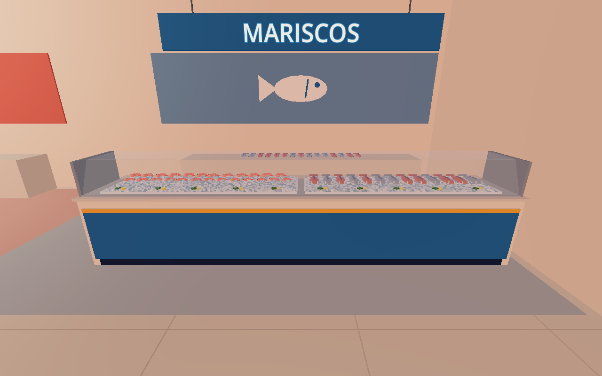
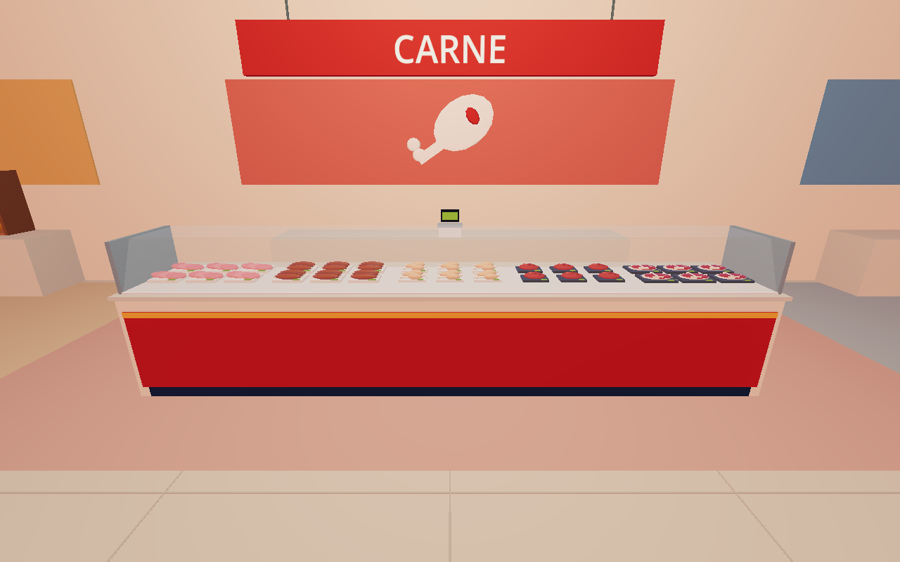
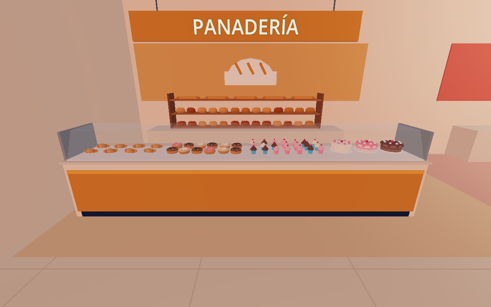

Bon Adventure town. Item names are the in-game word keys read from the built supermarket scene; screenshots rendered 17 Nov 2026.
Drawn from the item positions in the built supermarket interior (local Supermarket coordinates, +Z up the page). Zone shading is approximate; counters and fixtures use their real item positions. The shop assistant stands outside this frame, near the entrance. The wall outline and entrance door are not in this item data, so the outline is estimated.

Checkout counters 1 and 2 (each: checkout counter, conveyor belt, barcode scanner, cash register, register screen, card reader, receipt, shopping bag, candy rack with candy and chocolate); queue stanchions; service desk with cashier counter, money, credit card. Staff: samoyed cashier.

Drinks cooler: water bottle, juice, soda. Household gondola: soap, sponge, detergent, toothbrush, toothpaste, shampoo. End cap: toilet paper. Front left also has shopping baskets, a flowerpot with leaf, and featured apples and bananas. Staff: beagle clerk (salesperson).

Wall display: grapes, strawberry, cherry, orange, lime, lemon, pear, apple, banana, avocado, mango, peach. Island stand: watermelon, pineapple, coconut, mango, apple, orange, banana, peach. Also produce scale, price board, price tags, crates of watermelon and coconut.

Tomato, carrot, broccoli, potato, lettuce, onion, garlic, corn, chili pepper, mushroom, cucumber, bell pepper. Produce sign and price tags.

West gondola: cereal, honey, jam, coffee, tea, sugar, flour, oil, salt, pepper. East gondola: rice, beans, pasta, tortilla, cookie, can, tuna, soup, olive, salsa. End caps: snack, jar.

Shown: can, tuna, soup, olive, salsa (plus ends of the neighbouring rows).

Two fridges: milk, yogurt, eggs, cheese, butter, ham, sausage, salad, chicken.

Fish, shrimp.

Steak, meat, chicken, sausage, ham, deli scale.

Cake, cupcake, donut, croissant, bread, baguette (bread rack).